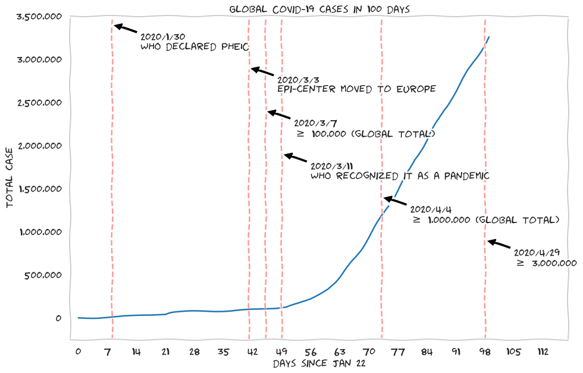

English version:Covid-19 is an ongoing global pandemic. Starting from Jan 23rd, 2020 when China announced the lockdown of the city of Wuhan, Hubei Province of China, it had been 100 days (on Apr 30th) since the SARS-CoV-2 virus that cause Covid-19 (formerly known as 2019-nCoV) hit the Earth. Wuhan City is the first place where the first outbreak of Covid-19 occurred and reported since Dec of 2019. The disease quickly spread through China as a result of the extremely massive flow of non-local workers before the Chinese New Year (CNY), when people are going back to their hometown to celebrate CNY once a year with their family. As Covid-19 is extremely contagious (which is believed to be more contagious than the 2003 SARS-CoV-1), the disease quickly spreads internationally and causing the local community transmission and outbreak at those countries in Feb, after the announcement of PHEIC by WHO on Jan 30; and the epicenter of the outbreak has moved to Europe on early Mar when the number of new confirmed cases drop quickly at China. Many countries imposed the city or national levels lockdown measure starting from the end of Feb or in Mar. Covid-19 is recognized as a global pandemic, and it is a currently ongoing issue.
Read here: Covid-19 in 100 days: A simple observation report , written on 2020-05-03
中文版：2019 冠狀病毒肺炎 (Covid-19，過去也被稱爲武漢肺炎、新冠肺炎等) 是一個正在進行中的全球大流行事件。自中國宣佈中國湖北省武漢市的封城（ 2020年1月 23日）以來，至今已超過 100日（4月30日）。Covid-19 是由一種被稱爲 SARS-CoV-2 的冠狀病毒所引起的疾病。Covid-19 最初在 2019年12月 被發現於中國的武漢市，隨後因大量民衆在農曆年前約十天起的中國春運（春節期間的交通運輸）的返鄉朝，致使大量在武漢工作的中國其他地區人民回鄉，並進而直接或間接的將疾病大量的擴散至中國其他城鎮。世界衛生組織（WHO）在1月30日發佈PHEIC。隨後，因 Covid-19 的高度傳染性（其傳染力相信是比 2003 年 SARS 的病毒 SARS-CoV-1 強上好幾倍），其開始在 2月快速的散播至世界各地，並引發當地的社區感染（即本土傳播病例，這些病例近期並沒有到武漢或中國的旅遊史）。在接下來的 3月，中國的疫情已在其官方的數據顯示爲逐漸的受控制，並且新發病例已大幅度降低，而此疾病的大爆發地 （epicenter）已轉移至歐洲。歐洲及世界各地的多個國家的 Covid-19 疫情在這時候也開始爆發，並且各國逐漸實施各種封城措施。
繼續閱讀: 2019 冠狀病毒肺炎 (Covid-19) 的百日觀察報告 , 寫於 on 2020-05-04